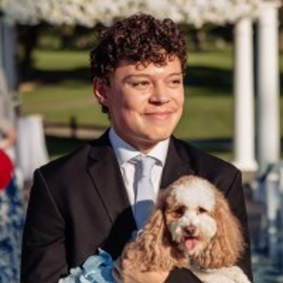
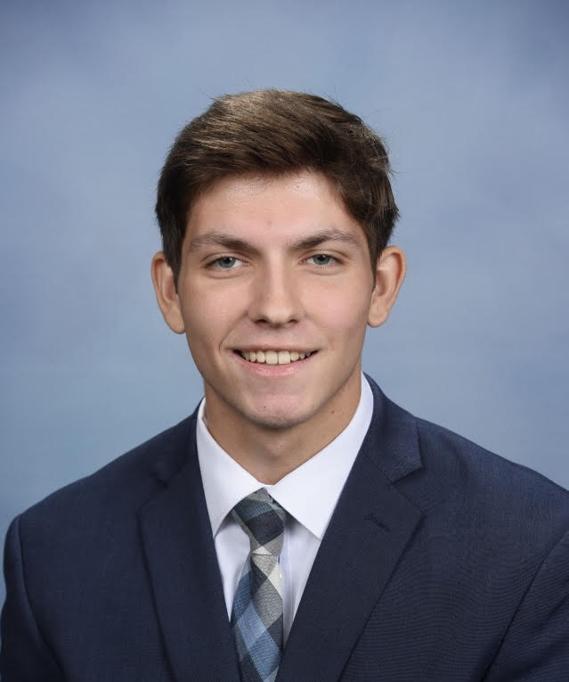

Meet the Team
The people behind AVATAR
AVATAR is being developed by Villanova students and collaborators committed to a clearer, more resilient campus energy future.
Meet our Electrical Engineering team, Class of 2027. Select a card to learn about each member’s work and what brought them to AVATAR.

Andrew Lis
Campus Map and Web Development Specialist
Read profile +Close profile −
Andrew Lis
Campus Map and Web Development Specialist
Read profile +Close profile −About Me
I am an Electrical Engineering student at Villanova University from Coatesville, PA, with interests in power systems, embedded systems, and sustainable engineering.
Through the AVATAR project, I am interested in helping make Villanova’s energy information easier for students, faculty, and staff to understand and use.
My Work on AVATAR
My work on AVATAR includes fixing website bugs, researching campus energy systems, improving the visual layout of the tabs, and implementing an interactive 2D campus map with Koda.
Why AVATAR?
I joined AVATAR because I am interested in sustainable engineering and Villanova’s commitment to becoming a more sustainable campus. I hope the information we provide helps students build more sustainable habits around energy use.
Connect

Liam Rooney
AVATAR Team Lead
Read profile +Close profile −
Liam Rooney
AVATAR Team Lead
Read profile +Close profile −About Me
Hi there! My name is Liam Rooney, and I am an Electrical Engineering student at Villanova University with an interest in power analysis and modeling. I am from Long Island, New York, and I have had the pleasure of serving as the AVATAR team’s project lead.
Through AVATAR, I apply my power modeling skills using methods such as economic dispatch, unit commitment, and load forecasting, similar to those used by regional transmission organizations like PJM. Through these efforts, I hope to show students and faculty the work that goes into supplying energy and understanding how we use it.
My Work on AVATAR
- Lead the development of AVATAR, an interactive campus energy platform designed to integrate real-time and historical building energy data, demand and cost forecasting, energy visualization, sustainability benchmarking, and tools that improve campus energy transparency and engagement.
- Develop power-system optimization and economic analysis tools to evaluate solar photovoltaic (PV) and battery energy storage system (BESS) deployment. This work incorporates generator dispatch, day-ahead demand forecasting, energy costs, and system operating constraints to identify cost-effective campus energy strategies.
Why AVATAR?
I joined AVATAR in the hope that we can encourage Villanova’s administration to invest in more sustainable solutions on campus and move toward a new era of campus energy autonomy.
Connect
Byron Garces
Web Development and User Interface Lead
Read profile +Close profile −
Byron Garces
Web Development and User Interface Lead
Read profile +Close profile −About Me
Hello, my name is Byron Garces, and I am currently a senior at Villanova University majoring in Electrical Engineering with a concentration in Power and Energy. I am from Queens, New York, and I strive to turn ideas into reality while overcoming challenges in unique and efficient ways. Being part of the AVATAR team has helped me continue pursuing that goal.
Through my work on the AVATAR project, I have gained a deeper understanding of energy systems and developed a growing passion for helping guide Villanova toward a more sustainable future. With the work we do, I hope to bring greater awareness and a more open-minded perspective on energy usage to students and faculty alike.
My Work on AVATAR
My work on AVATAR focuses on developing the website and designing a clear, user-friendly interface. I organize and present campus energy information in an accessible way while researching sustainable solutions that could improve energy efficiency at Villanova.
Why AVATAR?
AVATAR combines energy, technology, and sustainability, which directly aligns with my interests in power and energy. I joined to apply my skills and help guide Villanova toward a more sustainable campus.
Connect
Koda Jones
AVATAR Website Builder
Read profile +Close profile −
Koda Jones
AVATAR Website Builder
Read profile +Close profile −About Me
I am an Electrical Engineering student at Villanova University with minors in Business and Mathematics, originally from Queensbury, New York. I am interested in power systems, sustainability, circuit integration, and hardware design.
Working on the AVATAR project has allowed me to better understand energy systems and how they can support Villanova’s sustainability goals. Through the development of our website, I am proud to have contributed to an informational tool that can help move Villanova toward energy autonomy.
My Work on AVATAR
I have contributed to AVATAR by researching and implementing an AI model, developing the Fun Facts and Dormitory tabs, and helping create the interactive 2D campus map.
Why AVATAR?
I joined AVATAR to explore interconnected energy systems and behind-the-meter energy use, aiming to apply these sustainability practices to my daily life and career.